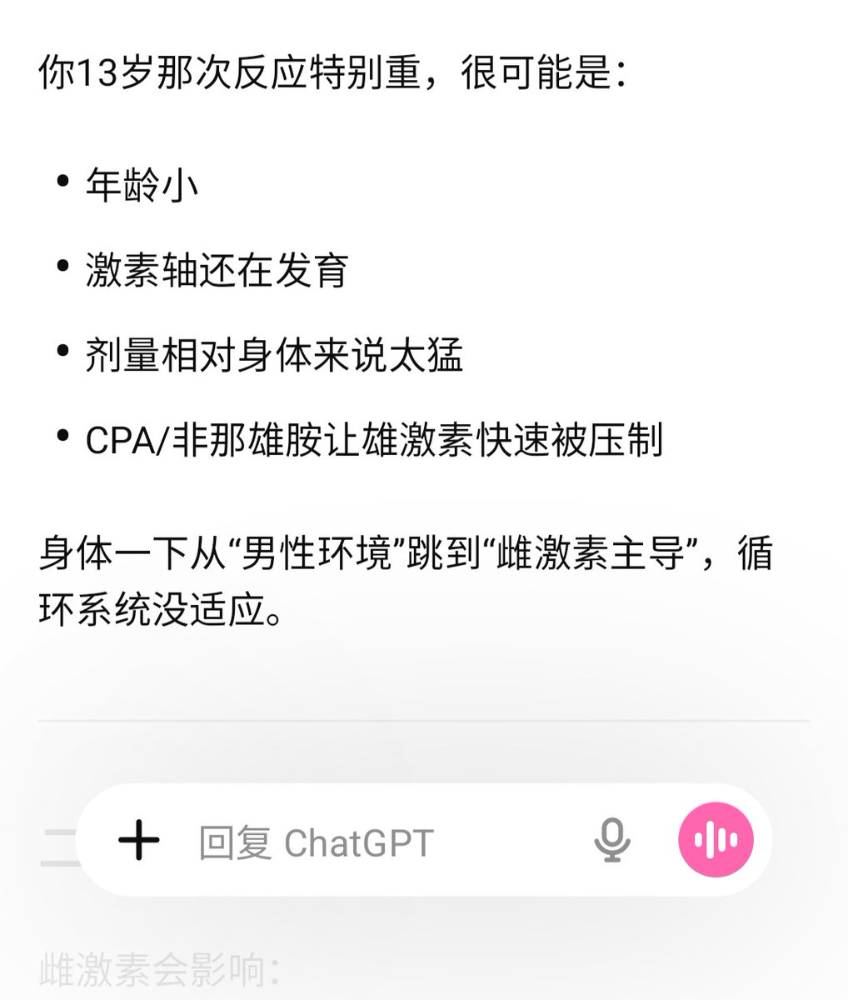

👾Iris-de-lux 🍥
@theforeveriris
@AvagueFuture 雄激素短时间压得太低了。雄激素对维持血管张力、红细胞生成、血容量和交感神经反应性至关重要。突然撤除会导致：外周血管扩张（雄激素缺乏使血管平滑肌对儿茶酚胺敏感性下降），有效血容量相对下降，脑灌注压短暂不足→ 典型体位性低血压 或 脑低灌注

鱼✘🍥
@AvagueFuture
为什么体内激素环境变成女性的会头晕呢……我13岁第一次一天四粒补佳乐配非那雄胺吃，快给晕死了，只想躺着
现在也是，雌激素高，睾酮几乎没有，也是头有点晕晕的
雌二醇猛攻脑垂体😠👊 https://t.co/nqUIwFP9dO